{kind=link}
{kind=link}
{kind=link}
{kind=link}
{kind=link}
{kind=link}

A 50 c postage due stamp of France used in Pau (France) with its perforation cut off pretending to be a rarer French colonies stamp.
Return To Catalogue - French colonies, postage due stamps - French colonies, postage due stamps, Fournier forgeries - France overview - French colonies - France Postage Due Stamps - France Postage Due Stamps, 1881 forgeries - France Postage Due Stamps, 1881 Fournier forgeries
Note: on my website many of the
pictures can not be seen! They are of course present in the
catalogue;
contact me if you want to purchase it.
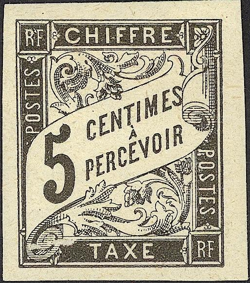 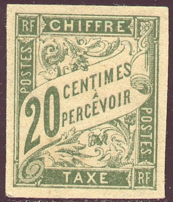 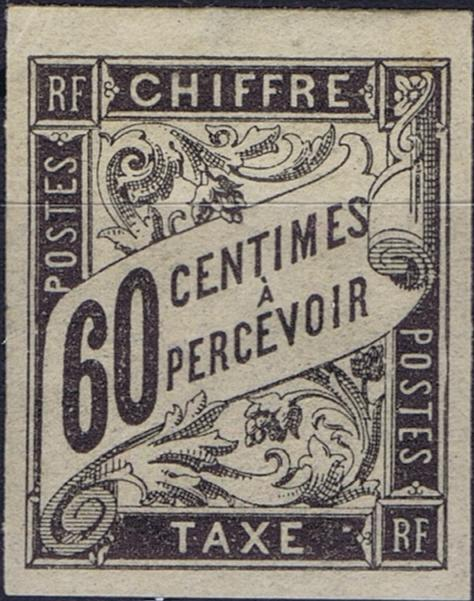 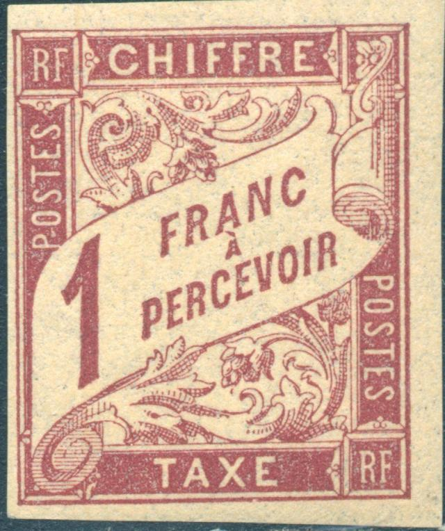 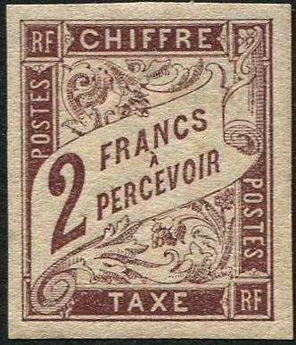 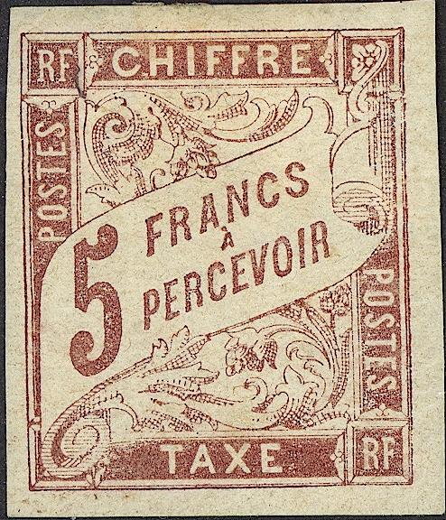
Presumably genuine stamps
A 50 c postage due stamp of France used in Pau (France) with its
perforation cut off pretending to be a rarer French colonies
stamp.
The stamp forger Venturini is known to have made forgeries of the French postage due stamps (and also the French colonies), see "Philatelic forgers, their lives and works" by V.E.Tyler.
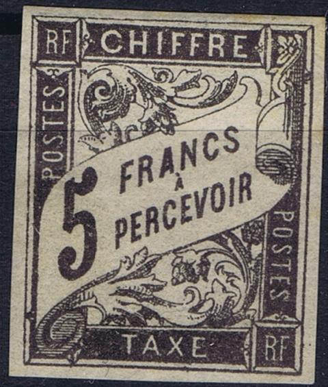
Very dubious 5 F stamps, most likely forgeries. The curly
ornament to the left of "C" of "CHIFFRE" is
not very symmetric. Also the lettering appears thinner than in
the genuine stamps. There appears to be a tiny dot in the right
bottom margin next to the "RF" (as also indicated in
the Serrane guide)
Fournier forgeries:
Click here for French colonies, postage due stamps, Fournier forgeries
In these forgeries, the curly ornaments at both sides of the word
"CHIFFRE" are very badly done. I've also seen them
perforated (but with the wrong perforation).
I've been told that the next stamps are also forgeries, I have no further information:
Three forgeries(?) with obvious forged "Mail" cancels?
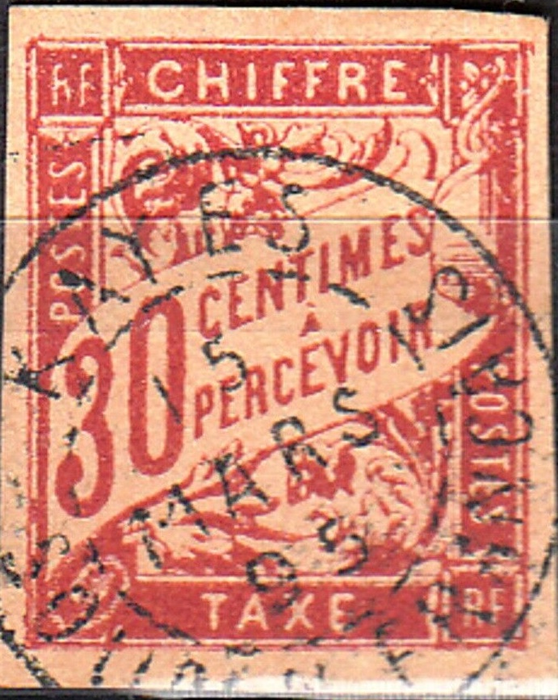
30 c forgery (it has an accent on the "A"!) with forged
"KAYES 15 MARS 95 SOUDAN FRANCAIS" cancel. The 30 c is
the only value in the set of French Colonies postage due stamps
that does not have an accent on the "A". It does not
appear to be exactly the same as the 30 c black Fournier forgery.
There is an extension to the upper right corner.
A forgery of the 2 F black. The "2" has a too long
bottom left part and the words "FRANCS A PERCEVOIR" are
too big. I presume the 1 F stamp has been made by the same
forger. In my view, the leaf pattern under the second
"R" of "PERCEVOIR" is wrong.
A 60 c with "60" too close to the left border and
"CENTIMES A PERCEVOIR" too large.
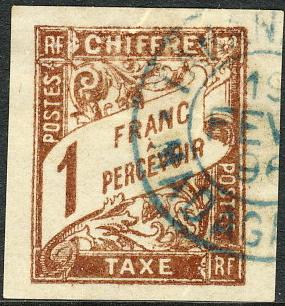
A 1 F brown forgery with the "A" not placed in the same
spot with respect to the "A" of "FRANC" when
compared to a genuine stamp, the printing is quite bad. A
presumably forged "TAMANARIVE 19 FEVR 96 MADAGASCAR"
cancel is applied to it. Next to it an equally blur 5 F forgery
with the same cancel. Note the large upper part of the second
"R" of "PERCEVOIR" in both forgeries.
A forgery with an "?? 2? JANV 90 EGYPTE" cancel,
possibly of the same origins as the above Tamanarive cancelled
forgeries.
Another forged stamp with a forged "ST-PIERRE M-on"
overprint, the "1" is totally different from a genuine
stamp, the second "R" of "PERCEVOIR" is
placed too far to the left. Next to it some Tahiti forgeries,
made by the same forger.
A whole sheet of the same primitive forgeries, but printed from a
worn plate. All values are printed in this sheet.
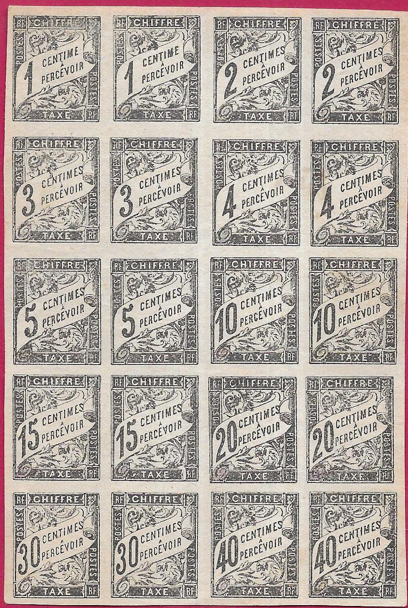
The same forgery sheet as shown above, with the bottom stamps
missing.
Another set of primitive forgeries:
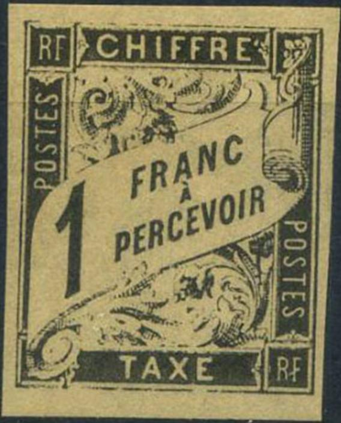
Very badly done 1 F and 2 F forgeries, some of the framelines on
top and bottom have disappeared. The 2 F has a scratch above the
"A" of "TAXE". The 5 F is done much better,
but has a white dot on top of the "C" of
"CHIFFRE" and a break in the lower frameline below
"RF" and there is a spot of color in the white line to
the right of the "ST" of the left "POSTES".
Highly dubious block of four 2 F French Colonies due stamps.
Very primitive 5 F forgery
A very badly done 20 c forgery with a forged "BENIN"
overprint.
{kind=link}
{kind=link}
{kind=link}
{kind=link}
{kind=link}
{kind=link}